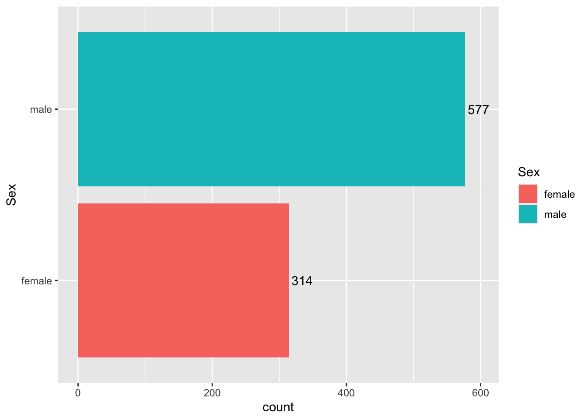
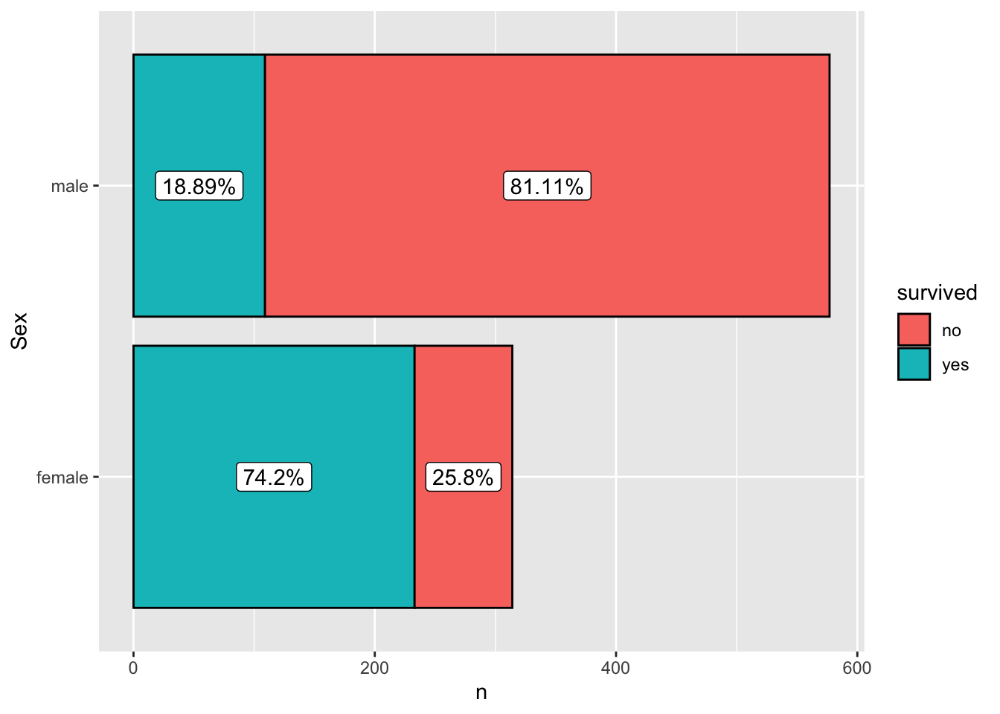
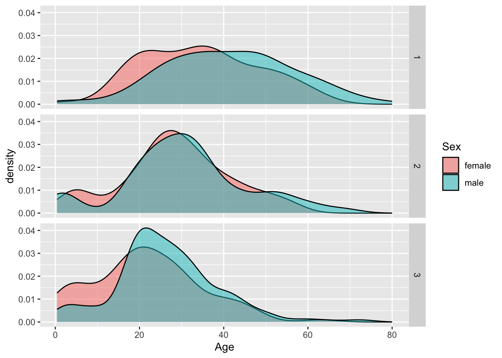
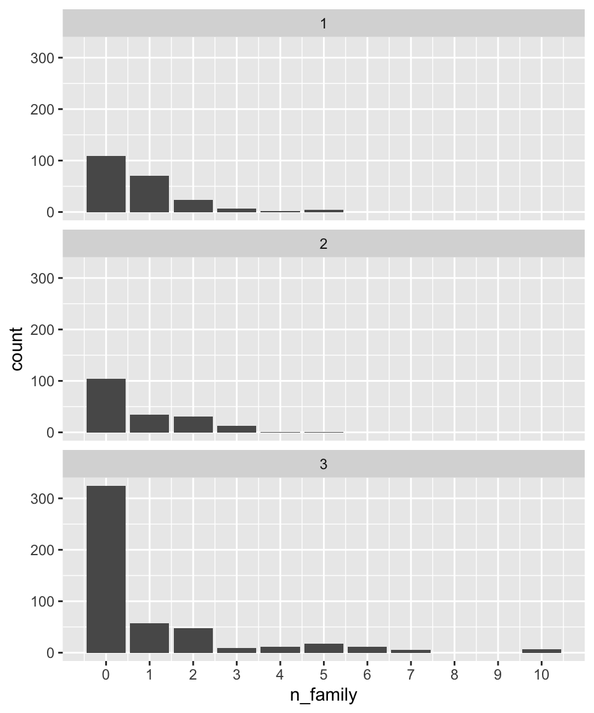
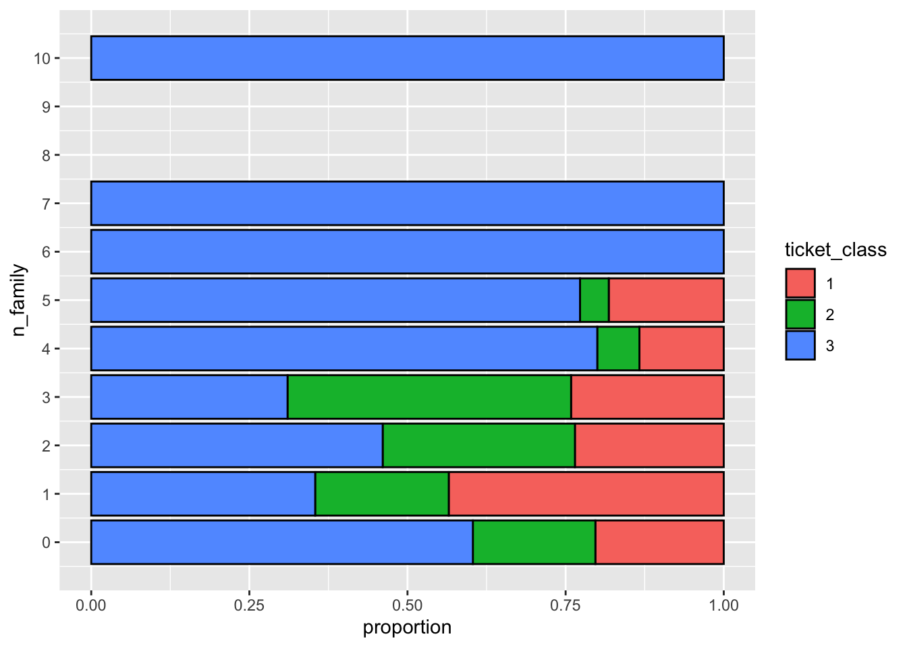

Lab 5: Data exploration with the Titanic dataset

Goals for today
Continue to practice data visualization with
ggplot2Continue to practice data transformation with
dplyrIntegrate 1) and 2) to explore the
titanicdataset
General instructions
Today, we will continue to combine the data transformation tools in
dplyrand the data visualization tools inggplot2to explore the patterns and trends in thetitanicdataset. This dataset contains the information on passengers aboard the Titanic when it sank in 1912.
- To start, first open a new RMarkdown file in your course repo, set the output format to
github_document, save it in yourlabfolder aslab5.Rmd, and work in this RMarkdown file for the rest of this lab.
- Load the required packages and read in the data with the following code:
# Load required packages
library(tidyverse)
library(knitr)
# Read in the data
titanic <- read_csv("https://raw.githubusercontent.com/nt246/NTRES-6100-data-science/master/datasets/Titanic.csv")
# Let's look at the top 5 lines of the dataset
head(titanic, n = 5) %>%
kable()| PassengerId | Survived | Pclass | Name | Sex | Age | SibSp | Parch | Ticket | Fare | Cabin | Embarked |
|---|---|---|---|---|---|---|---|---|---|---|---|
| 1 | 0 | 3 | Braund, Mr. Owen Harris | male | 22 | 1 | 0 | A/5 21171 | 7.2500 | NA | S |
| 2 | 1 | 1 | Cumings, Mrs. John Bradley (Florence Briggs Thayer) | female | 38 | 1 | 0 | PC 17599 | 71.2833 | C85 | C |
| 3 | 1 | 3 | Heikkinen, Miss. Laina | female | 26 | 0 | 0 | STON/O2. 3101282 | 7.9250 | NA | S |
| 4 | 1 | 1 | Futrelle, Mrs. Jacques Heath (Lily May Peel) | female | 35 | 1 | 0 | 113803 | 53.1000 | C123 | S |
| 5 | 0 | 3 | Allen, Mr. William Henry | male | 35 | 0 | 0 | 373450 | 8.0500 | NA | S |
- As a reminder, to get familar with this dataset, you might want to use functions like
View(),dim(),colnames(), and?. You will see that the dataset includes the following variables:
notes <- read_csv("https://raw.githubusercontent.com/nt246/NTRES-6100-data-science/master/datasets/Notes.csv")
kable(notes)| Variable | Definition | Key |
|---|---|---|
| PassengerId | Passenger ID | NA |
| Survival | Survival | 0 = No, 1 = Yes |
| Pclass | Ticket class | 1 = 1st, 2 = 2nd, 3 = 3rd |
| Name | Pasenger name | NA |
| Sex | Sex | NA |
| Age | Age in years | NA |
| Sibsp | # of siblings / spouses aboard the Titanic | NA |
| Parch | # of parents / children aboard the Titanic | NA |
| Ticket | Ticket number | NA |
| Fare | Passenger fare | NA |
| Cabin | Cabin number | NA |
| Embarked | Port of Embarkation | C = Cherbourg, Q = Queenstown, S = Southampton |
Note: Age is fractional if less than 1. If the age is estimated, it is in the form of xx.5
Exercise 1: Use data transformation and visualization to answer the following questions in breakout rooms (50 min)
Suggestions:
Make sure that you use figures and/or tables to support your answer.
We provide some possible solutions for each question, but we highly recommend that you don't look at them unless you are really stuck.
Do not worry if you cannot finish Exercise 1 in 50 minutes. You can keep working on these questions after the break.
Question 1: According to Wikipedia, there was an estimated 2,224 passengers and crew onboard the Titanic when it sank. How many of them do we have information for in this dataset? Of the people we have data for, how many of them survived and how many did not? What is the overall survival rate?
One possible solution click to expand
# number of passengers in the dataset
nrow(titanic) ## [1] 891# number of passengers surviving vs. dying
survived_count <- titanic %>%
mutate(survived = ifelse(Survived==0, "no", "yes")) %>%
count(survived) %>%
mutate(percentage = round(n/nrow(titanic)*100,2))
kable(survived_count)| survived | n | percentage |
|---|---|---|
| no | 549 | 61.62 |
| yes | 342 | 38.38 |
# plotting
titanic %>%
mutate(survived = ifelse(Survived==0, "no", "yes")) %>%
ggplot(aes(x = survived)) +
geom_bar(aes(fill = survived)) +
geom_label(data = survived_count, aes(label=str_c(percentage, "%"), y=n/2)) +
coord_flip()Note: str_c() is used to add the percentage sign.
Question 2. How many passengers on the Titanic were males and how many were females? What do you find when you break it down by ticket class?
One possible solution click to expand
# male vs. female
## table
sex_count <- titanic %>%
count(Sex)
kable(sex_count)| Sex | n |
|---|---|
| female | 314 |
| male | 577 |
## plot
sex_count %>%
ggplot(aes(x = Sex, y = n)) +
geom_col(aes(fill = Sex)) +
geom_text(aes(label = n, y = n + 20)) +
ylab("count") +
coord_flip()
# male vs. female broken down by ticket class
## table
sex_class_count <- titanic %>%
group_by(Sex, Pclass) %>%
count()
kable(sex_class_count)| Sex | Pclass | n |
|---|---|---|
| female | 1 | 94 |
| female | 2 | 76 |
| female | 3 | 144 |
| male | 1 | 122 |
| male | 2 | 108 |
| male | 3 | 347 |
## plot
sex_class_count %>%
ggplot(aes(x = Sex, y = n)) +
geom_col(aes(fill = Sex)) +
geom_text(aes(label = n, y = n + 20)) +
facet_wrap(~Pclass) +
ylab("count")
Question 3. How many passengers of each sex survived and how many of them did not? What is the survival rate for passengers of each sex?
One possible solution click to expand
# table
sex_survival_count <- titanic %>%
mutate(survived = ifelse(Survived==0, "no", "yes")) %>%
group_by(Sex, survived) %>%
count() %>%
group_by(Sex) %>%
mutate(percentage = round(n/sum(n)*100, 2))
kable(sex_survival_count)| Sex | survived | n | percentage |
|---|---|---|---|
| female | no | 81 | 25.80 |
| female | yes | 233 | 74.20 |
| male | no | 468 | 81.11 |
| male | yes | 109 | 18.89 |
# plot
sex_survival_count %>%
arrange(Sex, desc(survived)) %>%
group_by(Sex) %>%
mutate(label_y = cumsum(n) - 0.5 * n) %>%
ggplot(aes(x=Sex)) +
geom_col(aes(fill = survived, y=n), color = "black") +
geom_label(aes(label = str_c(percentage, "%"), y = label_y)) +
coord_flip()
Note: the line mutate(label_y = cumsum(n) - 0.5 * n) is used to place the labels in the middle of each colored bar.
Question 4. For how many passengers do we have age information (including estimated age)? For how many is the age information missing? What is the age distribution for passengers whose age information is available?
One possible solution click to expand
# age info
## table
age_info_count <- titanic %>%
mutate(age_info = ifelse(is.na(Age), "missing", "available")) %>%
count(age_info)
kable(age_info_count)| age_info | n |
|---|---|
| available | 714 |
| missing | 177 |
## plot
age_info_count %>%
ggplot(aes(x=age_info, y=n)) +
geom_col(aes(fill=age_info)) +
geom_label(aes(y=n+30, label=n)) +
coord_flip()# age distribution
## summary
titanic %>%
filter(!is.na(Age)) %>%
.$Age %>%
summary()## Min. 1st Qu. Median Mean 3rd Qu. Max.
## 0.42 20.12 28.00 29.70 38.00 80.00## Plot
titanic %>%
filter(!is.na(Age)) %>%
ggplot(aes(x=Age)) +
geom_histogram()
Question 5. Show the age distribution per ticket class, per sex. What do you find?
One possible solution click to expand
titanic %>%
filter(!is.na(Age)) %>%
ggplot(aes(x=Age, fill=Sex)) +
geom_histogram() +
facet_grid(Pclass~Sex)titanic %>%
mutate(ticket_class = as.character(Pclass)) %>%
filter(!is.na(Age)) %>%
ggplot(aes(x=Age, fill=Sex)) +
geom_density(alpha=0.5) +
facet_grid(ticket_class~.)
Question 6. How do the sex, ticket class, and age of a passenger affect their chance of survival? Try to use a single plot to answer this question.
Hint: geom_histogram() and facet_grid() can be helpful in answering this question.
One possible solution click to expand
titanic %>%
filter(!is.na(Age)) %>%
mutate(survived = ifelse(Survived==0, "no", "yes")) %>%
ggplot(aes(x=Age, fill=survived)) +
geom_histogram(position="stack", color="black") +
facet_grid(Sex~Pclass)
Question 7. Show the distribution of the number of family members (including siblings, spouses, parents, and children) that each passenger was accompanied by. Were most passengers travelling solo or with family?
One possible solution click to expand
titanic %>%
mutate(n_family=SibSp+Parch) %>%
ggplot(aes(x=n_family)) +
geom_bar() +
scale_x_continuous(breaks = 0:10)titanic %>%
mutate(n_family=SibSp+Parch, with_family=ifelse(n_family>0, "yes", "no")) %>%
ggplot(aes(x=with_family)) +
geom_bar() +
coord_flip()
Question 8. Which ticket class did most of the largest families get? And which ticket class has the lowest proportion of female passengers who travelled solo out of all the female passengers in that class?
One possible solution click to expand
titanic %>%
mutate(n_family=SibSp+Parch) %>%
ggplot(aes(x=n_family)) +
geom_bar() +
scale_x_continuous(breaks = 0:10) +
facet_wrap(~Pclass, ncol = 1)
titanic %>%
mutate(n_family = SibSp+Parch, ticket_class = as.character(Pclass)) %>%
ggplot(aes(x = n_family, fill = ticket_class)) +
geom_bar(color = "black", position = "fill") +
scale_x_continuous(breaks = 0:10) +
ylab("proportion") +
coord_flip()
Question 10. What is the distribution of the per-ticket fare for each ticket class?
One possible solution click to expand
titanic %>%
group_by(Ticket) %>%
mutate(n_ticket=n(), fare_per_ticket = Fare/n_ticket, ticket_class=as.character(Pclass)) %>%
ggplot(aes(x=fare_per_ticket)) +
geom_histogram(bins = 100) +
facet_wrap(~ticket_class, ncol = 1, scales = "free_y")
Recap (5 minutes)
Share your findings, challenges, and questions with the class.
Short break (10 min)
Exercise 2: Independent data exploration (40 min)
Continue to explore the Titanic dataset.
Suggested activities:
Continue to work on Exercise 1 if you have not finished.
Polish your plots in Exercise 1. Try to put more thought into editing the aesthetics of your figures and tables to make them easier to understand and nicer to look at (e.g. choose the most appropriate geometric object, aesthetic mapping, facetting, position adjustment; add meaningful axis labels, figure titles, legend titles; change the background; be creative; etc.).
Read the example code that we provided in Exercise 1. Make sure that you understand each line, and try to reproduce the output/computations on your own.
Think of other interesting questions you can answer with this dataset and explore different strategies for getting your answer.
Recap (10 minutes)
Share your findings, challenges, and questions with the class.
END LAB 4